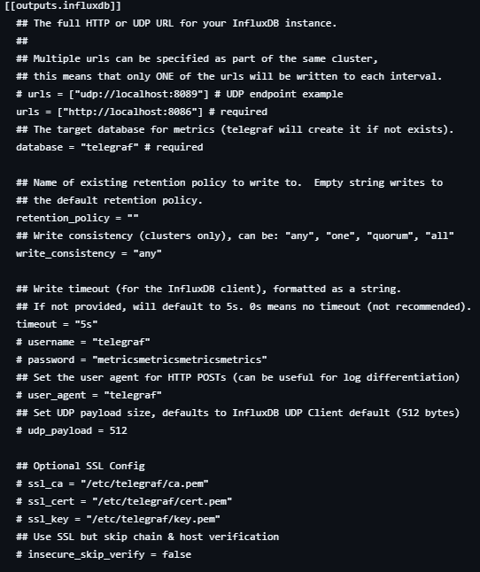
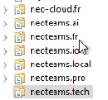
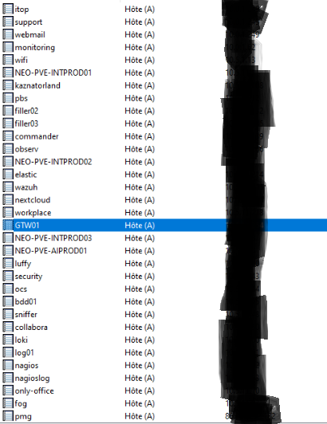
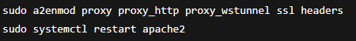
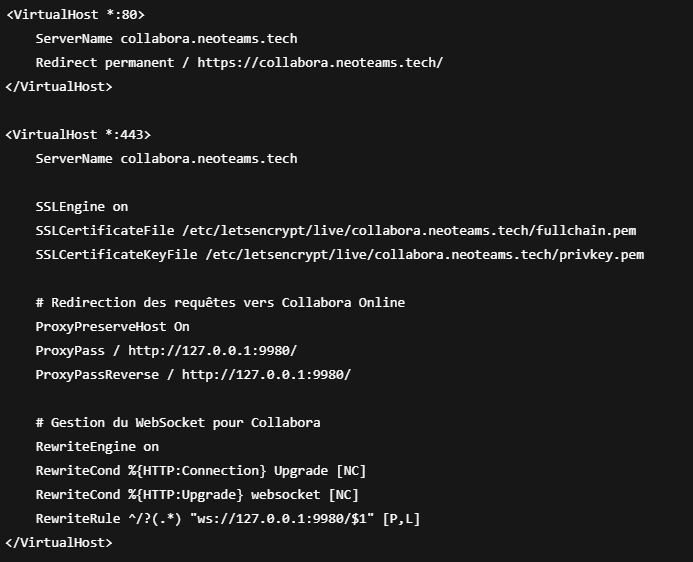
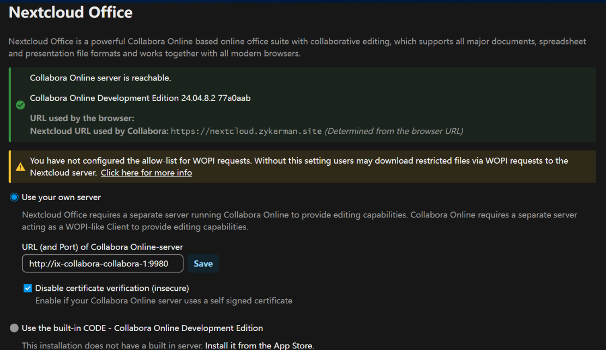
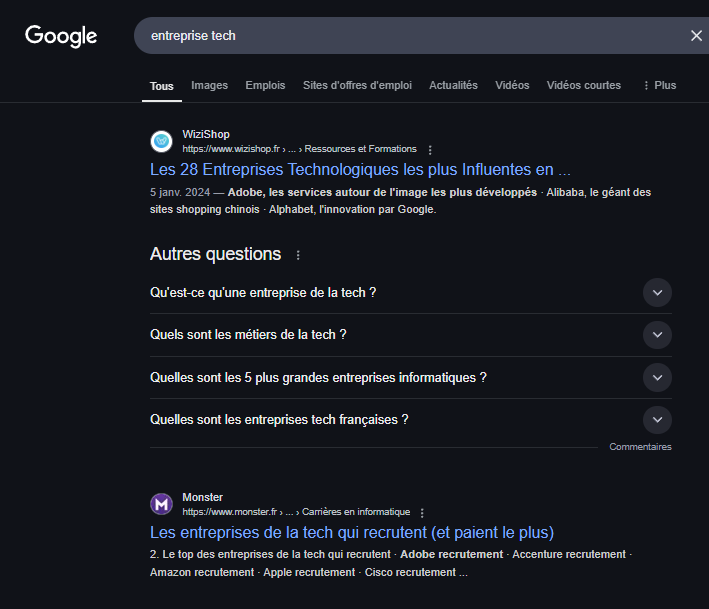
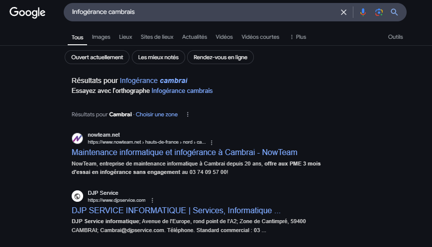
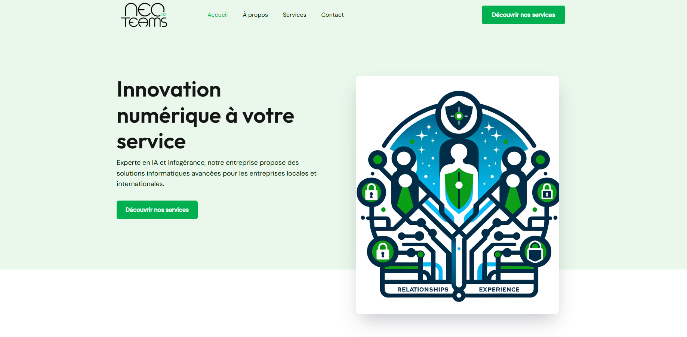

s
photos avenir
Je m'appelle Sullivan Delettrez étudiant au Lycée Henri Wallon en BTS SIO (services informatiques aux organisations) option SISR (solutions d'infrastructure, systèmes et réseaux)
Stages en entreprise
stage realisé durant ma formation
NEOTEAMS.IO est une entreprise informatique proposant différents services tels que l'IA, l'infogérance, et un atelier communautaire. Travaillant en étroite collaboration avec des entreprises locales et présentes en France, en Afrique, en Nouvelle-Calédonie
s
Mise en place reverse proxy
Mise en place collabora pour nextcloud
Presence en ligne de l'entreprise
Mise en place supervision

La surpervision permet de collecté et d'analysé des données relatives à la performance, à la disponibilité et à la sécurité d'un système d'information . Durant mon stages j'ai parcouru differente solution de supervision telle que zabbix , influxdb , wazuh , metrics snmp . chaque solution avaient sont lot d'avantage et d'inconveninant c'est donc pour cela qu'on a du testé chaqu'une des solution pour choisir celle qui serais la plus diversifié pour aller avec un maximum de serveur de l'infrastructure malgré que pour certaines tache comme la securité ont a gardé wazuh et pour les appareils snmp telle que des switch nous avons garder zabbix sinon la solution final qui offré une bonne diversité etais influxdb qui a etait mis en forme avec des dashboards grafana

Mise en place supervisions
lors de la realisation de la collecte de données avec influxdb j'ai du utilisé telegraf qui est sont agent de collecte de données il possede beaucoup de presets de recuperation des données tel que base de données , serveur proxmox , serveur web , information system(ram,cpu,uptime,...) quand j'ai du le mettre en place j'ai du config l'adresse du serveur influxdb ainsi que les identifiant pour se connecté a la base de données cree selon le type de services


nous avons utilisé zabbix dans le but de recuperé les information du reseau sur les appereil physique tel que switch et routeur et aussi quelque autre machine la configuration de la recuperation des metrics zabbix s'effectue avec le zabbix agent et/ou les requetes snmp


Ajout d'enregistrement dns

l'active directory windows possede un service dns installable facilement . Tout les enregistrement dns interne de l'entreprise etais sur un serveur dns windows active directory
Ajout d'enregistrement dns

l'active directory windows possede un service dns installable facilement . Tout les enregistrement dns interne de l'entreprise etais sur un serveur dns windows active directory et nous avons du cree des enregistrement dns dans l'ad

Mise en place reverse proxy
le reverse proxy permet de servir d'intermediaire entre un service web et un client qui interroge , cela a permis de faire en sorte pour certains service comme le collabora presenté juste apres pour faire en sorte de rediriger la requette en https sur le port par default 443 vers le port par default de collabora ce qui ajoute une couche de securité et facilité sont utilisation
Mise en place reverse proxy

le reverse proxy ma permis de transfere les requetes sur l'adresses dns collabora.neoteams.tech:443 donc sur https://collabora.neoteams.tech/ vers le port par default de collabora du a la complexité de collabora j'ai du ajouté la gestion des websockets

Mise en place collabora pour nextcloud
Collabora est un service type office capable de géré n'importe quel format courant , il stocké sur un serveur pouvant etre relié au service cloud nextcloud
Mise en place collabora pour nextcloud
la mise en place de collabora est assez simple ils suffit de l'installé de mettre en place le reverse proxy vue precedament pour s'assurer de la securité des echanges et ajouté dans la page office de nextcloud l'adresse dns ou l'ip du serveur (ps: la capture du menu nextcloud est une representation elle ne represente en aucun cas le serveur nextcloud appartenant a neoteams.io)

Presence en ligne de l'entreprise
La presence en ligne d'une entrepris est primordial du a l'ere du numerique tout passe maintenant par le web et donc la communication

Presence en ligne de l'entreprise

l'entreprise neoteams.io etant encore reçente en france elle souffre encore du mauvais referencement sur le web mais elle est retrouvable a l'adresses suivant https://neoteams.io/

Presence en ligne de l'entreprise
Presence en ligne de l'entreprise
test